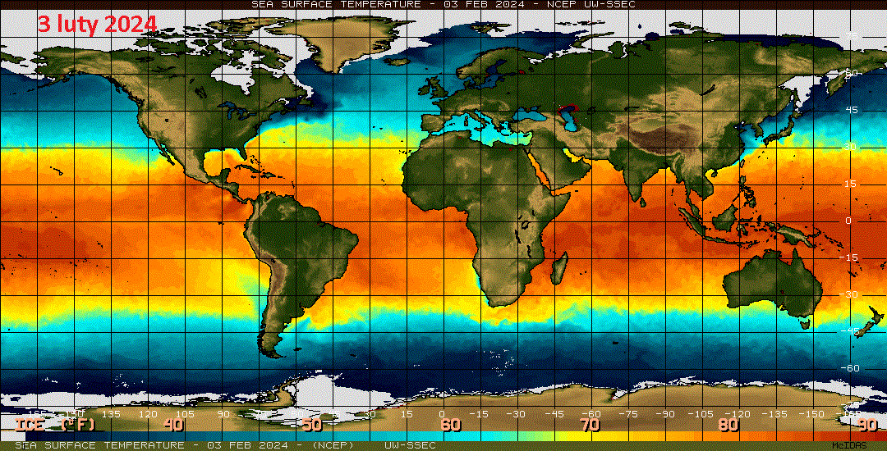
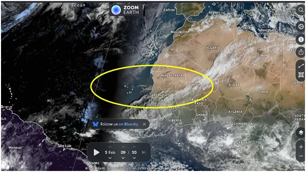
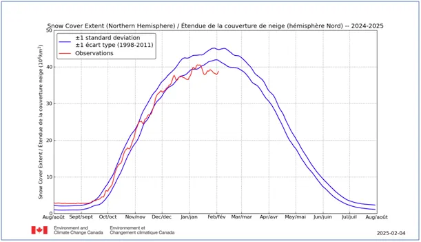
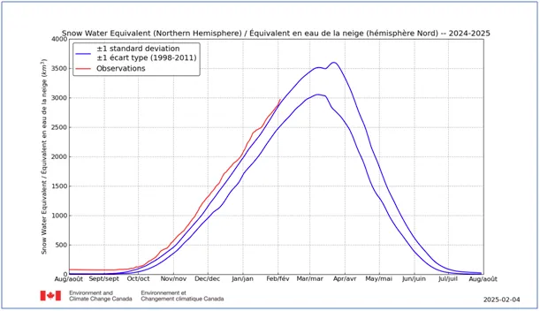
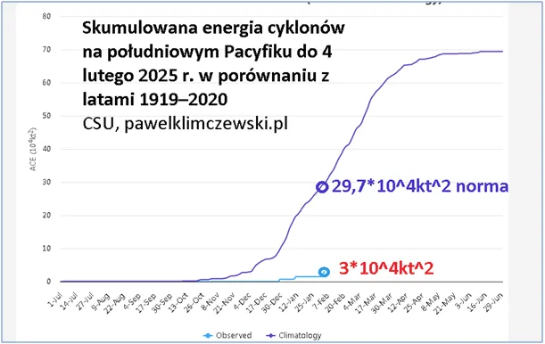
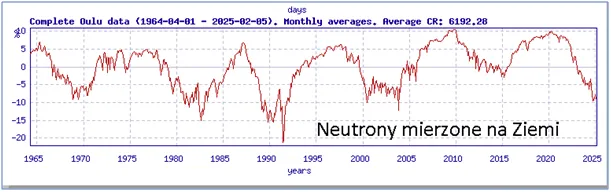

Słońce zdecydowało, idzie spać. Nie chowajcie czapek!
Zdjęcia satelitarne doskonale pokazują prawie zawsze czyste jak kryształ niebo nad Atlantykiem na zachód od Mauretanii, to skutek zimnego Prądu Kanaryjskiego i brak parowania oceanu.

Pierwszy wykres to zasięg śnieżnej pokrywy na naszej, północnej półkuli. Jest on obecnie poniżej dolnych norm, ale wykres drugi mówi nam, że ilość wody uwięzionej w śniegu jest ponad górnymi wartościami normy. Oznacza to, że na dalekiej północy oraz w górach bardziej na południe grubość pokrywy śnieżnej jest bardzo duża w kolejnym trzecim sezonie, gdy prowadzę te obserwację.


Animacja temperatur (ponad tytułem) powierzchni oceanów pokazuje nam, że zjawisko silnego zimnego Prądu Kanaryjskiego u zachodnich wybrzeży Sahary nasila się, co najpewniej przyniesie kolejny suchy sezon nad Europą. To właśnie brak chmur powstających nad Atlantykiem daje nam suchą zimę i wiele słonecznych dni. Wielki Pacyfik też jest wyjątkowo chłodny, najlepszą miarą termiki oceanów są cyklony jakie on generuje i na początek lutego mamy 10% normy 30-letniej. Gdzie te "palące świat" cyklony panowie eksperci ?

Przypominam, że od 3 dekad mamy cykl zniżkowy, a cyklony idealnie są zsynchronizowane z cyklami aktywności Słońca. Na ostatnim wykresie liczby neutronów widzimy, że Słonce zdecydowanie jest po szczycie swej aktywności i teraz będzie już tylko coraz słabiej chroniło nas, za pomocą jonosfery, przed promieniowaniem kosmicznym.

Oznacza to więcej chmur w strefach tropikalnych i zimniejsze oceany. Chmury te spadną gdzieś daleko w Arktyce w postaci śniegu i odłożą większe czapy śnieżne. Pozycja Europy jest niestety na ścieżce suszy. Zapewne będziemy czytali, że to z powodu ocieplenia, ale na szczęście my wiemy, co tu się dzieje.
Paweł Klimczewski